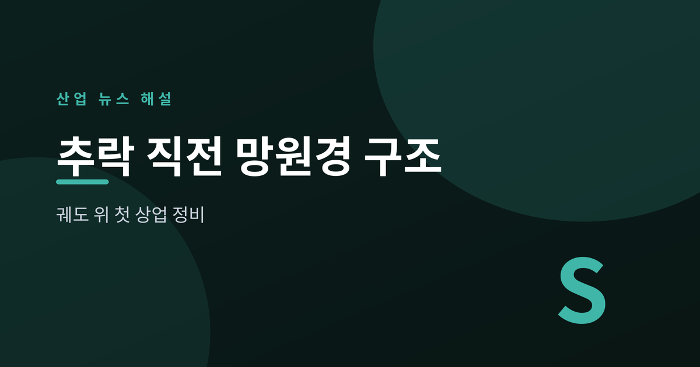
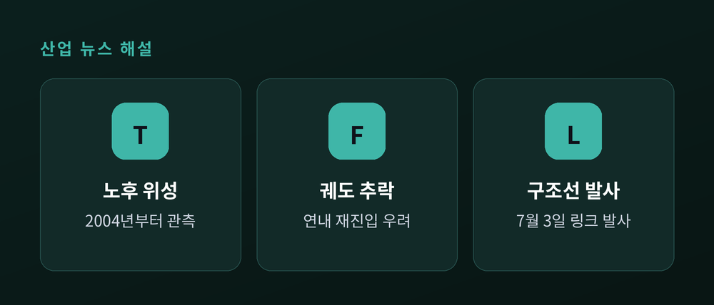
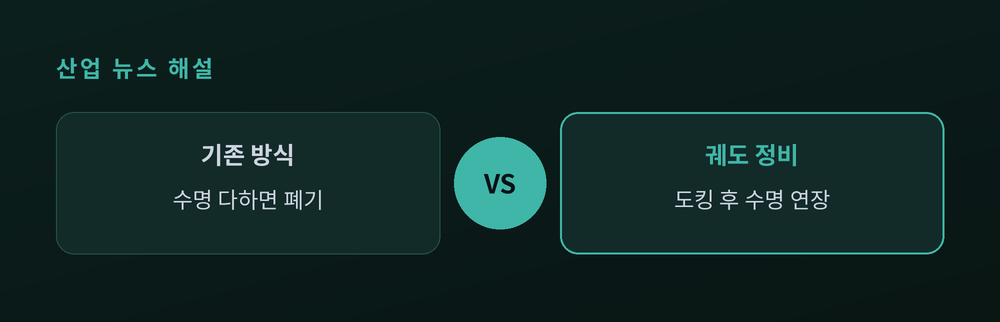
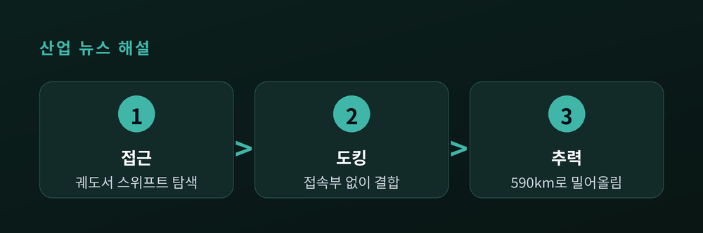

궤도 위 첫 상업 정비

2004년부터 우주를 관측해 온 나사의 스위프트 망원경이 대기권 추락 위기에 놓였다. 2026년 7월 3일, 이를 끌어올릴 구조선이 발사됐다. 설계 당시 정비를 염두에 두지 않은 정부 위성에 상업 우주선이 도킹하는 첫 시도다.
나사의 닐 게렐스 스위프트 관측위성은 감마선 폭발을 감시해 온 노장이다. 그러나 태양 활동이 예상보다 강해지며 대기가 팽창했고, 궤도가 빠르게 깎여 연내 통제 불능 재진입이 우려됐다.
7월 3일, 스타트업 카탈리스트 스페이스가 만든 정비선 '링크(LINK)'가 발사됐다. 항공기에서 공중 발사되는 페가수스 XL 로켓이 425kg급 링크를 저궤도에 올렸다. 링크는 앞으로 몇 주에 걸쳐 스위프트에 접근·도킹한 뒤 궤도를 밀어 올린다.

핵심은 '설계되지 않은 정비'다. 스위프트에는 도킹용 접속부가 없다. 성공하면 상업 우주선이 정부 소유 위성에 도킹하는 첫 사례가 된다.
나사는 2025년 9월 카탈리스트에 약 3000만 달러 규모 계약(SBIR 3단계)을 맡겼다. 스타피시 스페이스, 애스트로스케일 진영을 제친 결과다. 적은 비용으로 노후 위성의 수명을 되살릴 수 있다면, '쓰고 버리는' 위성 산업의 셈법 자체가 바뀐다.

링크는 이온 추력기로 스위프트를 약 590km(370마일) 고도까지 밀어 올릴 계획이다. 전 과정은 10~12주가 걸리며, 성공 시 관측 수명이 약 10년 연장된다.
| 항목 | 내용 |
|---|---|
| 발사일 | 2026년 7월 3일 |
| 정비선 | 링크(425kg) |
| 계약액 | 약 3000만 달러 |
| 목표 고도 | 약 590km |
| 예상 기간 | 10~12주 |
접근·도킹·추력이라는 세 관문이 남았다. 도킹 자체가 정밀 제어의 난제라, 안심하기엔 이르다.

우주 쓰레기가 늘고 발사 비용이 낮아진 시대에, '수리하는 우주'는 더는 공상이 아니다. 스위프트 구조가 성공하면 궤도 위 정비는 하나의 산업으로 올라선다.
핵심 한 줄: 버리던 위성을 고치는 시대가 궤도 위에서 시작됐다.
낡은 망원경 하나의 운명이, 우주 산업의 다음 문법을 가늠하는 시험대가 됐다.
참고 출처: NASA, CBS News, CNN, SpaceNews